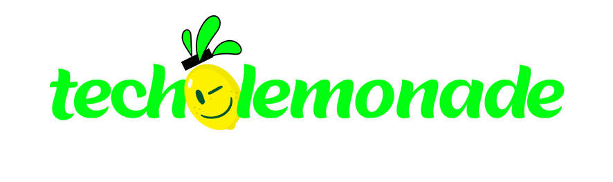

IA Quest
7 missões curtas. Você escolhe o que faria, vê o que acontece e descobre seu resultado no final. Duração aproximada: 5 a 7 minutos.
 COOMTOCE IA Quest • edição especial para o Fórum do Cooperado
COOMTOCE IA Quest • edição especial para o Fórum do Cooperado
Um jogo rápido para explorar situações reais sobre inteligência artificial, cuidado, privacidade, responsabilidade e boas escolhas na medicina.

7 missões curtas. Você escolhe o que faria, vê o que acontece e descobre seu resultado no final. Duração aproximada: 5 a 7 minutos.
Explicações simples sobre CFM, privacidade, ferramentas de IA, ortopedia e novas pesquisas em saúde.
Você vai passar por sete situações que podem acontecer na vida real. Em cada uma, escolha o que faria e veja as consequências. O objetivo é usar a IA sem perder o que sustenta o cuidado: bom senso, segurança, confiança e responsabilidade.
Escolha a ajuda que mais combina com você. Ela mostra uma dica extra em uma das situações.
Escolha a ajuda que combina mais com você e comece.
Veja como suas escolhas equilibraram cuidado, privacidade, responsabilidade e valor. Este resultado é apenas parte do jogo.
Veja onde suas escolhas foram mais fortes ao longo das missões.
Um resumo das sete decisões e do que aconteceu em cada uma.
Veja os destaques que você conquistou durante o jogo.
Ações simples para continuar aprendendo e usando IA com mais segurança.
Respostas simples para consultar durante ou depois do evento.